Code Blocks
The programming in Scratch is done using Code Blocks. The Code Blocks are divided into nine groups:
- Motion
- Looks
- Sound
- Events
- Control
- Sensing
- Operators
- Variables
- My Blocks
Motion
The Motion Blocks are color coded in blue. The motion of the Sprite is controlled by means of Motion Blocks.
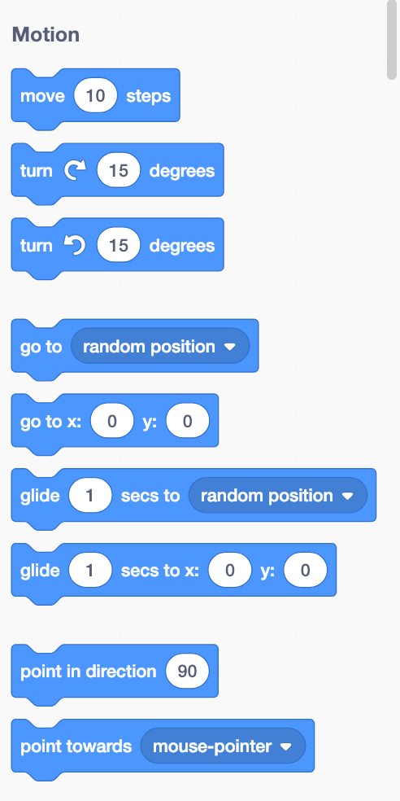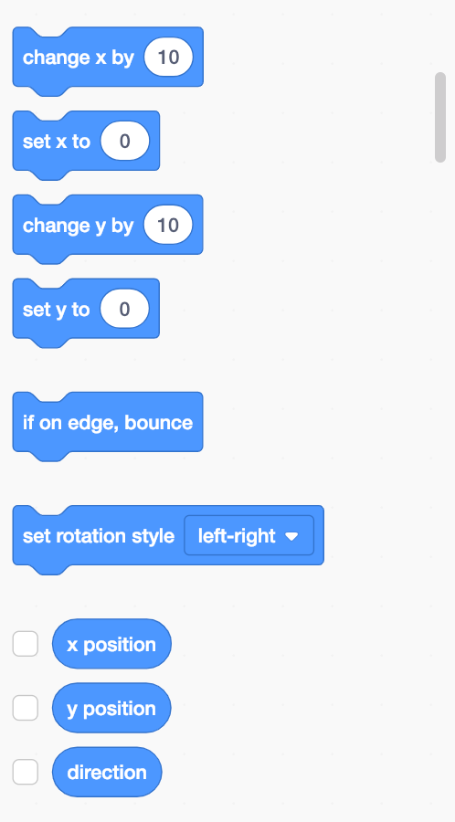
Looks
The Looks Blocks are color coded in purple. The appearance of the Sprite is controlled by Looks Blocks.
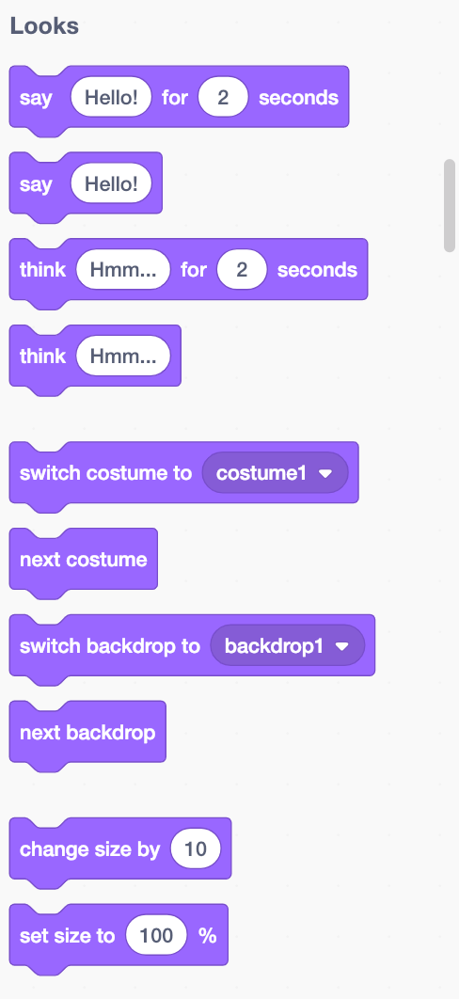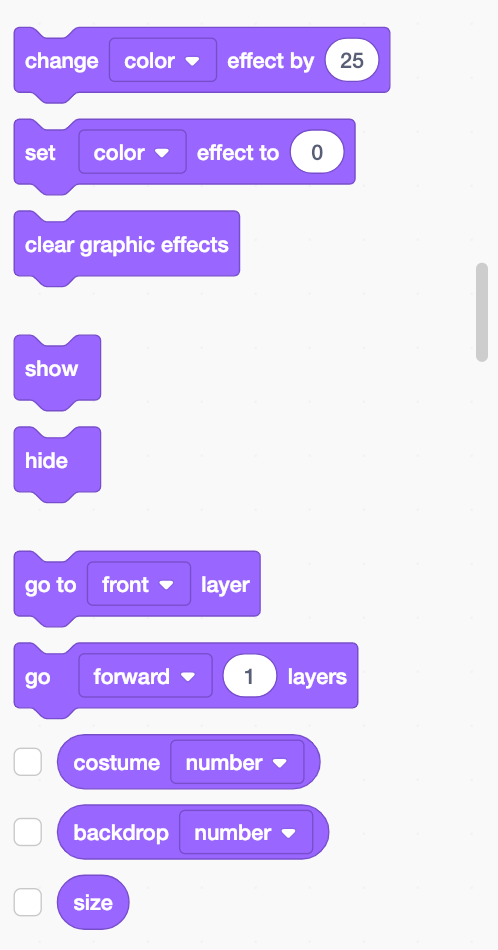
Sound
The Sound Blocks are color coded in light purple. Sound and MIDI functions are controlled with Sound Blocks.
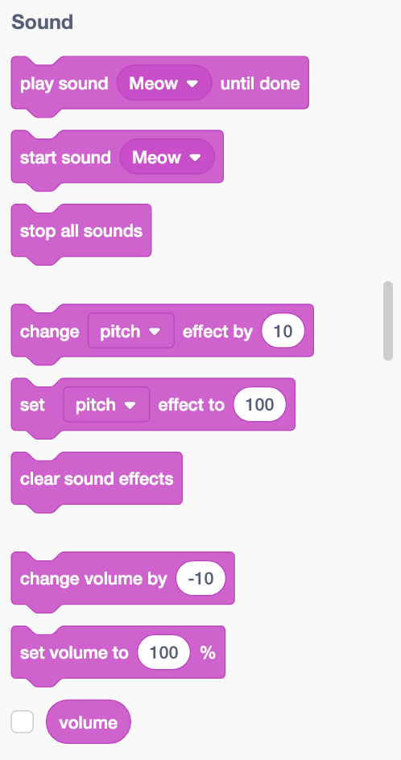Events
The Events Blocks are color coded in yellow orange. Events Blocks are used to start scripts (command series). You can use Event Blocks to get your Sprites to send messages to each other.
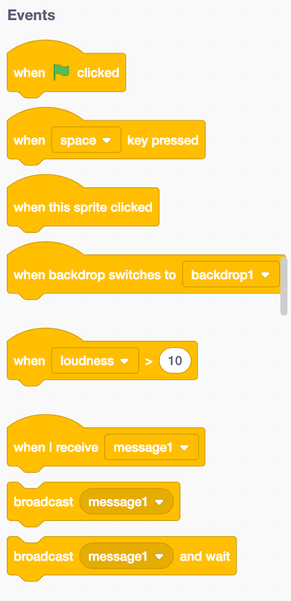Control
The Control Blocks are color-coded in orange. Control Blocks are used to control scripts. Control Blocks contain loops and conditions.
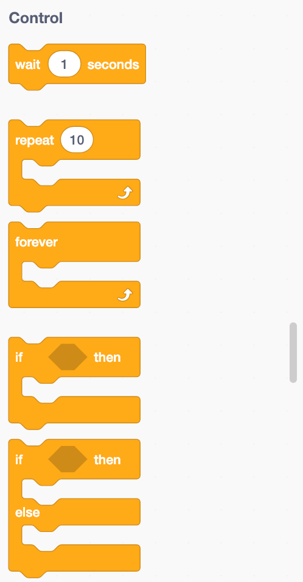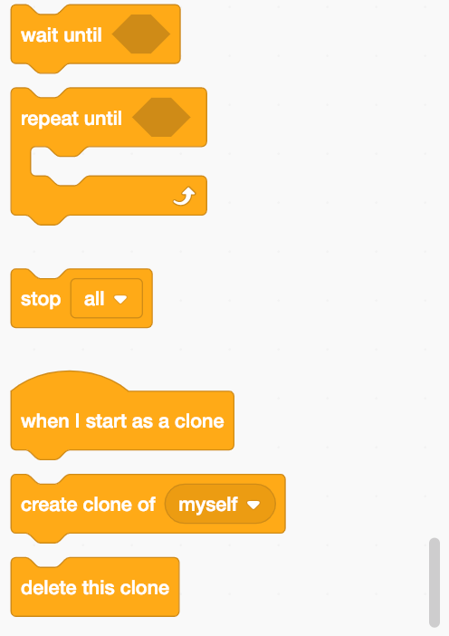
Sensing
The Sensing Blocks are color coded in blue-green. Sensing Blocks are used to detect different things in your projects.
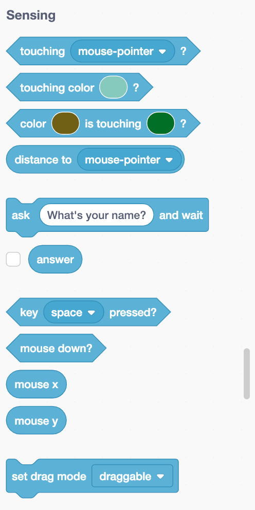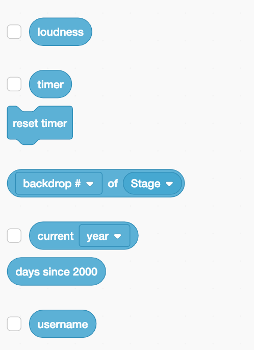
Operators
The Operators Blocks are color coded in light green. Operators Blocks are used for processing mathematical equations and strings (text).
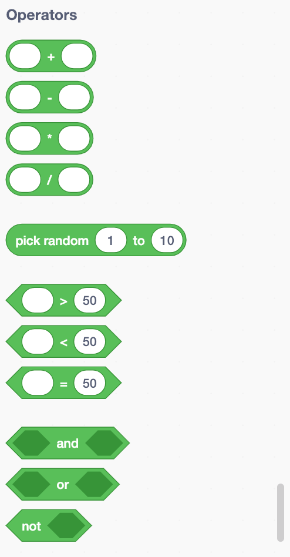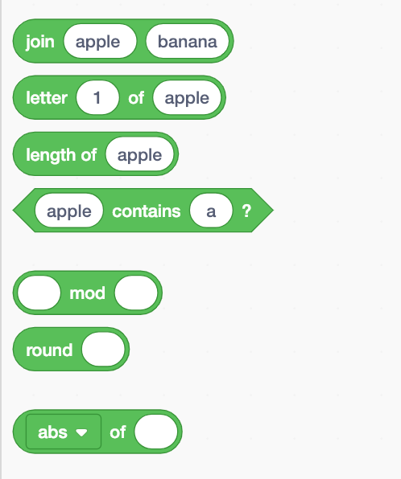
Variables
Variables Blocks are color coded in dark orange. Variables Blocks are used when creating variables for storing values and strings (text). You can also create List Blocks there. You can create and process lists with List Blocks.
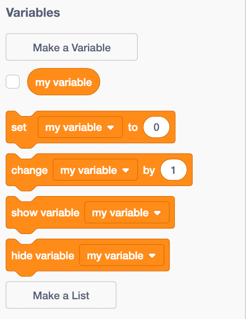My Blocks
My Blocks blocks are color coded in dark rose color. One can create new blocks with My blocks blocks.
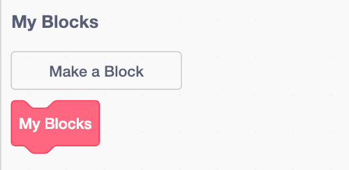